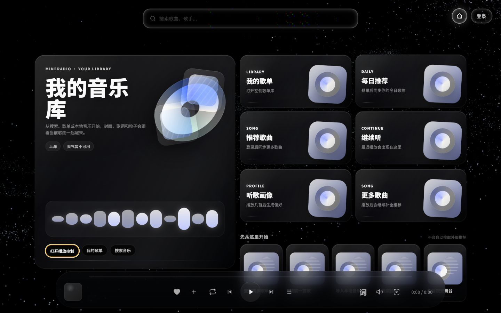
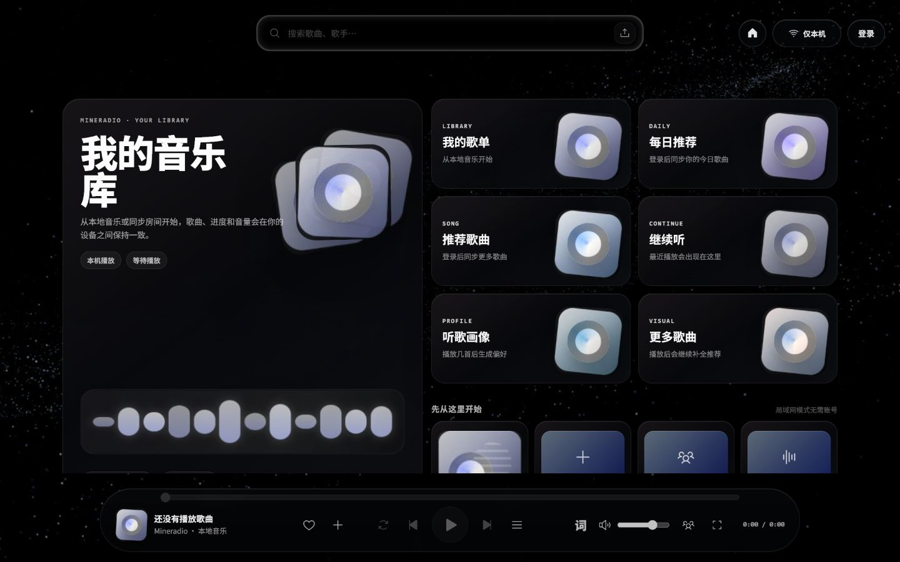

<!doctype html>
<meta charset="utf-8">
<title>Mineradio design comparison</title>
<style>
  html, body { margin: 0; background: #111; color: #fff; font: 15px system-ui, sans-serif; }
  main { display: grid; grid-template-columns: 1fr 1fr; gap: 12px; padding: 12px; }
  figure { margin: 0; }
  figcaption { display: flex; height: 28px; align-items: center; font-weight: 700; letter-spacing: .08em; }
  img { display: block; width: 100%; height: auto; border: 1px solid #444; }
  .crop { width: 100%; height: 150px; object-fit: none; object-position: center bottom; }
  .top-crop { height: 120px; object-position: center top; }
</style>
<main>
  <figure>
    <figcaption>原版参考 · 1440 × 900</figcaption>
    
  </figure>
  <figure>
    <figcaption>当前实现 · 1440 × 900</figcaption>
    
  </figure>
  <figure>
    <figcaption>原版底部控制台 · 1:1 中央裁切</figcaption>
    
  </figure>
  <figure>
    <figcaption>当前底部控制台 · 1:1 中央裁切</figcaption>
    
  </figure>
  <figure>
    <figcaption>原版顶部搜索 · 1:1 中央裁切</figcaption>
    
  </figure>
  <figure>
    <figcaption>当前顶部搜索 · 1:1 中央裁切</figcaption>
    
  </figure>
</main>
